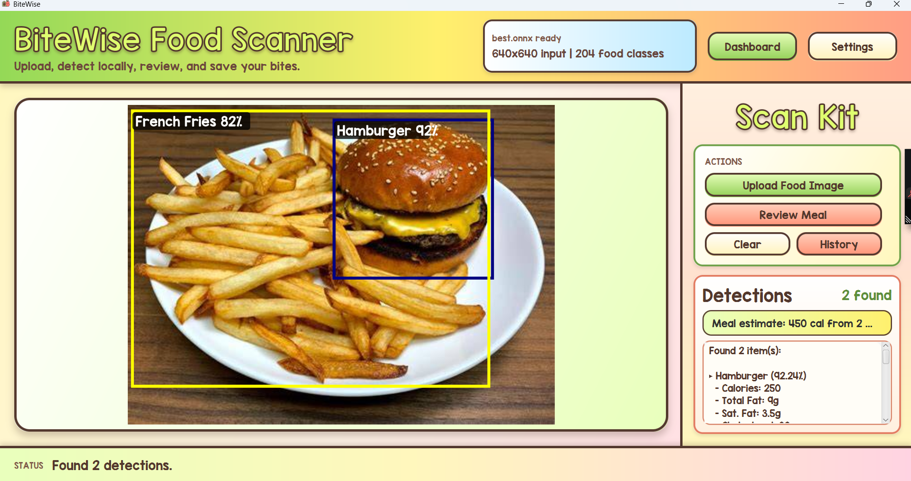

AI and ML
PyTorch, Scikit-Learn, Azure OpenAI, OpenAI API, NLP evaluation, model bias analysis.
Applied AI / Software / Creative Systems
I like building practical systems with a little personality: tools that detect food from images, evaluate clinical AI behavior, process sensor data, and make technical ideas easier to understand.

Stack
PyTorch, Scikit-Learn, Azure OpenAI, OpenAI API, NLP evaluation, model bias analysis.
Java, Python, C/C++, SQL, JavaScript, JavaFX, FastAPI, Flask, React, Next.js.
Docker, Git, Jupyter, Google Cloud Platform, Hugging Face, data pipelines, documentation.
About Me
I work across AI, software, and data-heavy projects, with a focus on building things that are useful, testable, and easy to explain. My projects range from food-detection nutrition tools to clinical AI bias evaluation pipelines.
I also spend a lot of time helping people understand code, math, algorithms, and debugging. That teaching background shapes how I build: clear interfaces, readable logic, and practical explanations.
Projects
Featured build
A JavaFX nutrition assistant that uses ONNX Runtime food detection to identify meals from images.
Java | JavaFX | ONNX Runtime | Maven | JSON
Research pipeline
Signal processing
BiteWise Gallery
Resume
Focused on applied AI research, Java/Python software projects, tutoring impact, and measurable technical outcomes.
Contact